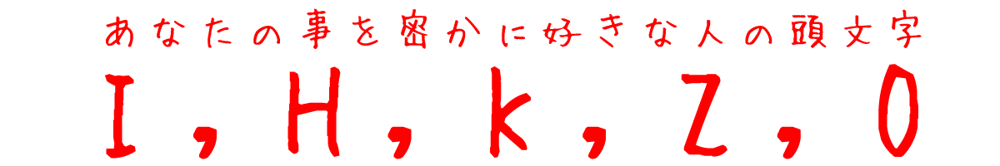
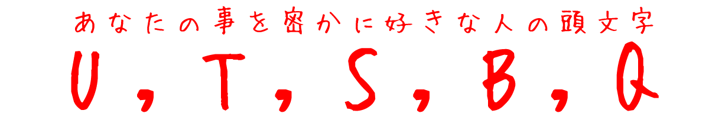

あなたのタイプ＆好きな人の頭文字が分かる恋愛診断
質問1: あなたの誕生日は何月？？
診断結果
あっさりタイプ
あなたはサッパリとした恋愛を好むタイプです。
人間関係においても面倒だと思うことを嫌うあっさりした性格の持ち主です。
そのため、トラブルが起こった場合でも引きずる事はあまりせず周囲からも心の広い人と思われているでしょう。
また、好き嫌いがはっきりしているので、関わりたい人と関わりたくない人を自分でしっかりと決めるタイプでもあります。
心の優しいあなたは、たとえ嫌いな相手であっても意地悪をするわけでもありませんが、
好きな人に対しても好意的であるという事を示して伝えられていないので、
好きな人には少しずつでも伝えていっても良いのではないでしょうか。
男女問わず誰からも必要とされている存在なので、勇気を持って相手に伝えてみましょう！
診断結果
尽くすタイプ

あなたは好きな人になら何でもしてあげたいと思う尽くすタイプの人のようです。
好きな人や恋人への愛情が深く自分のことを後回しにしてでも相手に与える事ができる人であり、
「自分だけが尽くしていて嫌だ」とネガティブに感じる事はなく、
相手に与えることに喜びを感じることのできる人ではないでしょうか？
ただ、たまには自分のことも見て欲しい・構って欲しいと思う一面も持っているので、
付き合う相手を選ぶ際は慎重になったほうがいいかもしれません。
あなたの尽くす性格を見越して好き放題言ってくる人もおり、
それでも好きになったら受け入れてしまう優しい性格なので、
好きになる前に相手をしっかり見極める事が必要になるでしょう。
診断結果
安定タイプ
あなたは恋愛に安定を求めるタイプです。
好きな人や恋人への愛情が深く自分のことを後回しにしてでも相手に与える事ができる人であり、
「自分だけが尽くしていて嫌だ」とネガティブに感じる事はなく、
相手に与えることに喜びを感じることのできる人ではないでしょうか？
ただ、たまには自分のことも見て欲しい・構って欲しいと思う一面も持っているので、
付き合う相手を選ぶ際は慎重になったほうがいいかもしれません。
あなたの尽くす性格を見越して好き放題言ってくる人もおり、
それでも好きになったら受け入れてしまう優しい性格なので、
好きになる前に相手をしっかり見極める事が必要になるでしょう。
診断結果
ピュアなタイプ

あなたはピュアな心を持つタイプの人です。
出会ったばかりの相手からも「昔から一緒にいる感じがする」と思われるような不思議な魅力を持った人で、
相手に対しても安らぎや癒しを与えられていることでしょう。
恋愛に進展するまではスローペースではありますが、一つひとつの恋愛を大切にしたいという気持ちの表れで
結婚しても幸せな家庭を築く事ができるタイプのはずです。
診断結果
あなたは運命的な出会いドラマティックな展開を望むタイプの人です。
ドラマの世界みたいに、運命の人が訪れて、一生忘れられないような恋愛を楽しみたい・・・
そんな思いは誰もが抱いているのではないでしょうか？
あなたはその嗅覚に優れていて特徴を知り、
運命の相手を見つけることができれば、
ドラマの世界のような大恋愛をすること実行できる想像力と行動力をもちあわせています。